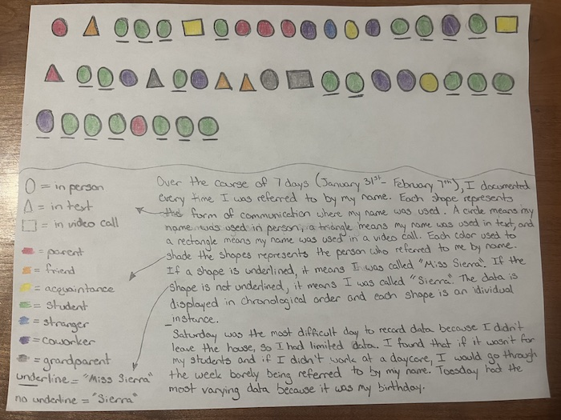

<html>
</html>
<head>
  <title>Dear Data</title>
  <link rel="stylesheet" type="text/css" href="dear_data.css">
</head>
<body>
  <ul class="nav">
    <li class="nav"><a href="index.html">Home</a></li>
    <li class="nav"><a href="resume.html">Resume</a></li>
    <li class="nav"><a href="dear_data.html">Dear Data</a></li>
    <li class="nav"><a href="text_analysis.html">Text Analysis</a></li>
    <li class="nav"><a href="mapping.html">Mapping</a></li>
    <li class="nav"><a href="AI.html">AI</a></li>
    <li class="nav"><a href="game_making.html">Game Making</a></li>
  </ul>
    <h1>Dear Data</h1>
    <hr>
  <div>
    <p>During the 2025 spring semester in my Digital Humanities 100 class, I was introduced to the Dear Data project. This project was created and completed by Giorgia Lupi and Stefanie Posavec. Each week, for a year, Lupi and Posavec collected and recorded data about their lives, sending it to each other on postcards. In my Digital Humanities class, I was tasked to complete a project following the same guidelines as Dear Data. I chose to record each time I was called by my name, “Sierra” and “Miss Sierra.” Below is a picture of the data I collected from January 31, 2025, to February 7, 2025.</p>
    
  </div>
  <br>
  </br>
  <hr>
